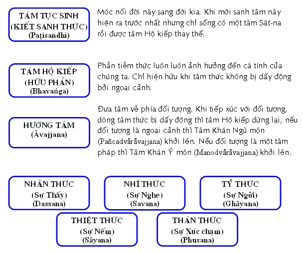
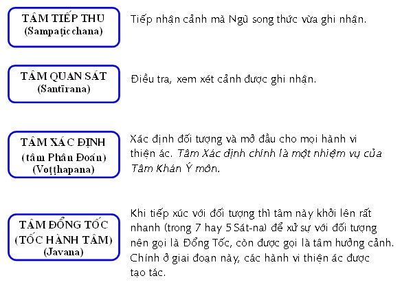
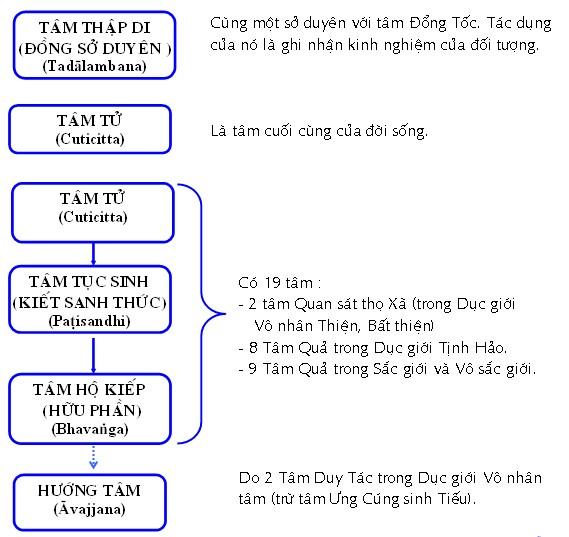
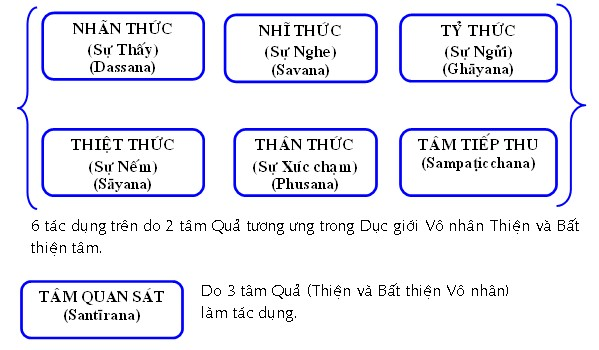
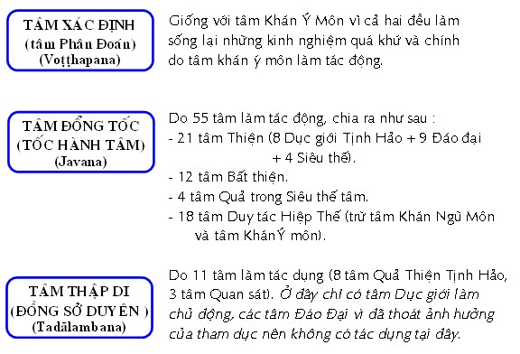

|
PHẬT GIÁO NGUYÊN THỦY THERAVÀDA VI DIỆU PHÁP BAN HOẰNG PHÁP |
|
BuddhaSasana Home Page |
Vietnamese, with Unicode VU Times or CN-Times font |
|
|
PHẬT GIÁO NGUYÊN THỦY THERAVÀDA VI DIỆU PHÁP BAN HOẰNG PHÁP |
|
Xin lưu ý: Cần có phông UnicodeViệt-Phạn VU Times hay CN-Times cài vào máy để đọc các chữ Pàli. |
|
BÀI 11. TỔNG KẾT CÁC LOẠI TÂM Tâm Dục giới có 54, Tâm Sắc giới có 15, tâm Vô Sắc giới có 12, Tâm Siêu Thế giới có 8 (hoặc 40). Như vậy, tổng cộng có 89 hoặc 121 tâm. Tâm chỉ có một ý nghĩa là sự biết cảnh hay nhận thức đối tượng (Cintīti = Vijāñāti). Phân theo người và cõi thì có 121 tâm, tính theo cái thì vô lượng vô biên, vì trong một cái khảy móng tay, tâm sanh diệt hằng triệu triệu cái, nên mới nói tâm chỉ là một. Một ở đây là một ý nghĩa chứ không phải là một thứ hay một cái. Tâm chia theo phần dị danh. Tâm chia theo hữu nhơn và vô nhơn: Tâm hữu nhơn gồm có: - 12 tâm bất thiện. Tâm vô nhơn gồm có: - 18 tâm dục giới vô nhân. Tâm chia theo tương ưng và bất tương ưng: Tâm chia theo tương ưng: - Tà kiến: tâm Tham thứ 1, 2, 5, 6. Tâm chia theo bất tương ưng: - 4 tâm Tham ly tà. Tâm chia theo hữu trợ và vô trợ: Tâm chia theo hữu trợ: - 4 tâm Tham (tâm thứ 2, 4, 6, 8). Tâm chia theo vô trợ: - 4 tâm Tham (thứ 1, 3, 5, 7). Tâm chia theo tâm thiền và tâm phi thiền: - Tâm thiền: gồm 27 tâm đáo đại và 40 tâm siêu thế. Tâm chia theo thọ: - Thọ khổ: 1 tâm thân thức dục giới quả bất thiện vô nhơn. - Thọ hỷ: 4 tâm Tham thọ hỷ. - Thọ xã: 4 tâm tham thọ xã. Tâm chia theo hiệp thế và siêu thế: - Tâm hiệp thế gồm có 81 tâm (54 tâm dục giới và 27 tâm đáo đại). Tâm chia theo tịnh hảo và vô tịnh hảo: - Tâm vô tịnh hảo gồm có 30 tâm (12 tâm bất thiện và 18 tâm vô nhân). Tâm chia theo ba tánh: - Tánh bất thiện. (19 tâm) Tâm chia theo bốn giống: - Giống bất thiện: 8 tâm tham - Giống thiện: 8 tâm thiện dục giới tịnh hảo - Giống quả: 7 tâm quả bất thiện vô nhân - Giống duy tác 3 tâm duy tác vô nhân Tâm chia theo NHÂN: Nhân gồm có 6: Tham, Sân, Si (ba Bất thiện nhân), Vô Tham, Vô Sân và Vô Si (hai nhân Thiện và nhân Vô ký). - 18 tâm không có nhân (Dục giới vô nhân tâm). - 2 tâm có một nhân là 2 tâm Si. - 22 tâm có hai nhân là: 10 tâm Bất thiện (8 Tham chỉ có Tham và Si + 2 Sân chỉ có Sân và
Si). - 47 tâm có ba nhân (Vô Tham, Vô Sân, Vô Si) là: 12 tâm Dục giới Tịnh Hảo hợp Trí. Tâm chia theo CÔNG TÁC Có tất cả là 14 tác dụng của tâm. Nếu phân chia theo vị trí thì có 10 loại:      Tóm lại: - 2 tâm Quan sát thọ Xã làm 5 tác dụng: - Tâm tục sinh (Kiết sanh thức) - 8 tâm quả trong Dục giới Tịnh Hảo làm 4 tác dụng: - Tâm tục sinh (Kiết sanh thức) - 9 tâm Quả trong Sắc giới và Vô sắc giới làm 3 tác dụng: - Tâm tục sinh (Kiết sanh thức) - 1 tâm Quan sát thọ Hỷ làm 2 tác dụng: - Tâm Quan sát - Tâm Khán Ý môn có 2 tác dụng: - Tâm Xác định (tâm Phân Ðoán) - Tâm Khán Ngũ Môn làm nhiệm vụ hướng tâm (khai mở lộ ngũ môn). Tâm chia theo CĂN MÔN Nhãn môn: có 46 tâm:- 1 Tâm Khán ngũ môn. Nhĩ môn, tỷ môn, thiệt môn và thân môn: cũng có ở mỗi cửa là 46 tâm. Tổng cộng có tất cả là 54 tâm khởi qua ngũ môn. Ý môn: có tất cả 67 tâm khởi lên. Tâm Khán Ý môn. 55 tâm Ðổng tốc: 12 Tâm Bất thiện. 11 tâm Thập di: 8 Tâm Dục giới Tịnh Hảo (8 tâm Quả). Ngoài ra có 19 tâm không khởi qua căn môn nào vì chúng chỉ là quả của các hành động trong quá khứ. Các tâm đó là: 2 Tâm Quan sát thọ Xã. 19 tâm vừa kể trên chỉ làm tác dụng tâm Tục Sinh, tâm Hộ Kiếp và tâm Tử. Tóm lại: - 36 tâm khởi qua một cửa: 10 thức tâm (Ngũ song thức): 2 Tâm khởi qua nhãn môn. 10 Tâm Sắc giới ( tâm Thiện và tâm Duy tác). [Khởi qua ý môn] 8 Tâm Vô sắc giới (tâm Thiện và tâm Duy tác). [Khởi qua ý môn] 8 Tâm Siêu thế (tâm Ðạo và tâm Quả). [Khởi qua ý môn] - 3 tâm khởi qua 5 cửa: (không khởi qua ý môn) Tâm Khán ngũ môn. - 31 tâm khởi qua 6 cửa: Tâm Quan sát thọ Hỷ. - 10 tâm khởi qua 6 cửa và đồng thời cũng không khởi qua cửa nào: 2 Tâm Quan sát thọ Xã. 10 tâm trên khi làm công tác Thập di thì chúng khởi qua 6 cửa; nhưng khi chúng làm công tác Tục sinh, Hộ kiếp và tâm Tử thì chúng không khởi qua cửa nào hết. - 9 tâm hoàn toàn không khởi qua cửa nào hết: 5 tâm Quả trong Sắc giới. 9 tâm này là quả của tâm Thiền nên không khởi lên trong tâm thức của Dục giới. Chúng chỉ làm công tác Tục sinh, Hộ kiếp và tâm Tử. Phân loại theo ÐỐI TƯỢNG Tâm có 6 đối tượng là Sắc, Thinh, Khí, Vị, Xúc và Pháp. Pháp, đối tượng của ý căn cũng có 6 đối tượng là Tịnh sắc căn, Tế sắc căn, Tâm, Tâm sở, Niết bàn và Khái niệm. 1) Sắc là đối tượng duy nhất của nhãn thức, đối tượng ấy xảy ra trong hiện tại. 2) Thinh là đối tượng duy nhất của nhĩ thức, đối tượng ấy xảy ra trong hiện tại. 3) Khí là đối tượng duy nhất của tỷ thức, đối tượng ấy xảy ra trong hiện tại. 4) Vị là đối tượng duy nhất của thiệt thức, đối tượng ấy xảy ra trong hiện tại. 5) Xúc là đối tượng duy nhất của Thân thức, đối tượng ấy xảy ra trong hiện tại. 6) Ðối tượng của Tâm khởi qua ý môn thì bao gồm cả quá khứ, hiện tại, vị lai và vượt thời gian tùy theo trường hợp: - 6 đối tượng của tâm Ðổng tốc Dục giới (Kāmajavana) trừ tâm Ưng Cúng sinh Tiếu là thuộc về quá khứ, hiện tại, vị lai và thoát ly thời gian. - Ðối tượng của tâm Tục sinh là quá khứ, hiện tại và vị lai. - Ðối tượng của tâm Ðổng tốc giúp cho Diệu trí (Abhiñña) được thiên nhãn thuộc về quá khứ, hiện tại, vị lai và thoát ly thời gian. - Ðối tượng của tâm Ðổng tốc Ðáo đại là quá khứ và thoát ly thời gian (vì Niết bàn thường hiện tại nên thoát ly thời gian). - Khái niệm (paññatti) cũng thoát ly thời gian. Khi lâm chung, một người có thể thấy mình đang làm một hành động mà khi còn sống mình thường làm; như kẻ hay giết người sẽ thấy mình đang giết người. Một Phật tử tín thành có thể thấy mình đang lạy Phật. Sự thấy đó gọi là nghiệp (Kamma). Hoặc người ấy có thể thấy những dụng cụ có liên hệ đến những hành động thường làm của mình như kẻ giết người có thể thấy con dao. Người Phật tử có thể thấy hình ảnh đức Phật. Sự thấy này gọi là nghiệp tướng (Kammanimitta). Một người độc ác có thể thấy hình ảnh địa ngục, ngạ quỷ hoặc một người chí thiện có thể thấy hình ảnh các cõi trời. Sự thấy này gọi là thú tướng (Gatimitta). Tịnh sắc căn (Pasāda) : Còn gọi là Sắc Thần Kinh, là tinh chất của Tứ Ðại, có khả năng thu nhận cảnh (thần kinh). Tịnh sắc của thân căn thì ở cùng khắp cả thân. Còn Tịnh sắc của 4 căn kia chỉ ở tại vị trí của căn đó.Tế sắc (Sukhumarūpaṃ) : Trong 28 sắc pháp có 12 sắc được gọi là Thô sắc [5 Tịnh sắc căn (Sắc thần kinh), Sắc, Thinh, Khí, Vị, Xúc (gồm Ðất, Lửa và Gió)], các sắc còn lại được gọi là Sắc Tế.Tâm (Citta) chỉ cho 89 tâm. Tâm sở (Cetasika) chỉ cho 52 Sở Hữu tâm. Niết bàn (Nibbāna) là đối tượng siêu thế đối với 8 tâm Siêu thế. Khái niệm (Paññatti) có 2 loại: - Danh chế định (Nāmapaññatti) - Nghĩa chế định (Atthapaññatti): Là đối tượng hay ý nghĩa gợi ra bởi Danh chế định. Ðối tượng của tâm Vô nhân tâm và tâm Bất thiện Sắc, Thinh, Khí, Vị và Xúc làm đối tượng cho 5 Thức căn, tâm Khán ngũ môn và tâm Tiếp thu. 11 Tâm Quả Dục giới còn lại (3 tâm Quan sát + 8 tâm Quả Tịnh Hảo) làm những công tác tâm Quan Sát, hay tâm Thập di, hoặc tâm Tục sinh, tâm Hộ kiếp và tâm Tử. Những công tác tâm Quan Sát và tâm Thập di chỉ có những đối tượng ở Dục giới do đó không thể có công tác ở những cảnh giới cao hơn được. Một người có thể tự cao khi làm được một việc thiện hay chứng được một cảnh giới thiền, do đó đã có một tâm Bất thiện khởi lên trước một đối tượng thiện; nhưng các tâm Bất thiện không thể khởi ở Siêu thế giới vì tại đây không có Tham, Sân, Si. 8 Tâm Ðổng Tốc ly Trí có thể khởi với các đối tượng ở Dục giới, Sắc giới và Vô sắc giới, nhưng không khởi lên với các đối tượng Siêu thế. Các bật Dự lưu, Nhứt lai và Bất lai đã đạt được cảnh giới Siêu thế, nhưng khi tâm các vị ấy là Dục giới ly Trí thì các vị ấy không nhận thức các cảnh giới Siêu thế. Cũng vậy, tâm Duy tác Dục giới ly Trí, vị A-La-Hán không nhận thức được các cảnh giới Siêu thế dù các vị biết rất rỏ ràng về cảnh giới đó. Ðối tượng của tâm Thiện hợp Trí. Ðối tượng của tâm Thiện Dục giới Tịnh Hảo hợp Trí của bậc Bất lai có thể thuộc Dục giới, Sắc giới, Vô sắc giới hay một cảnh giới của Siêu thế giới mà mình đã chứng được nhưng không vượt hơn cảnh giới đó. Ðối tượng của tâm Duy tác Dục giới Tịnh Hảo hợp Trí của vị A-La-Hán có thể khởi lên ở cảnh giới nào cũng được. Trong một Diệu Trí của Ðệ ngũ thiền, một vị A-La-Hán có thể biết được mọi vật ở bất cứ cảnh giới nào, hoặc quá khứ, hiện tại, vị lai, hay ở rất xa. Tâm Khán Ý môn hay Tâm Xác định có thể khởi lên với mọi đối tượng với mọi cảnh giới, vì tâm này làm công tác suy tư nên tư tưởng nào cũng phải có nó. Ðối tượng của Vô sắc giới Ðệ nhất và Ðệ tam Thiền làm tâm Tục Sinh, tâm này cũng chỉ là một khái niệm của quá khứ như hư không là vô biên (Ananto ākāso) hoặc không có sở hữu gì (natthi kiñci). Hai khái niệm trên được xem như là Nghiệp tướng (Kammanimitta) xuyên qua Ý môn của đối tượng của Ðệ nhị và Ðệ tứ Thiền. Trong Vô sắc giới, Ðệ nhị thiền lấy Sơ thiền làm đối tượng và Ðệ tứ thiền lấy Ðệ tam thiền làm đối tượng. Tóm lại: - 25 Tâm khởi lên với các đối tượng ở Dục giới: 23 tâm Quả Dục giới. - 6 tâm lấy Vô biên làm đối tượng: 3 Thức vô biên Xứ. - 21 tâm lấy khái niệm làm đối tượng: 15 Tâm Sắc giới. - 8 tâm lấy Niết bàn làm đối tượng: 4 Tâm Ðạo. - 20 tâm lấy tất cả làm đối tượng (trừ các đối tượng ở Siêu thế): 12 Tâm Bất thiện. - 5 Tâm lấy tất cả làm đối tượng (trừ các đối tượng ở Siêu thế): 4 Tâm Thiện Dục giới hợp Trí. - 6 tâm khởi lên với tất cả các đối tượng: 4 Tâm Duy tác Dục giới hợp Trí. Ở Dục giới, có 7 thức tâm khởi lên y cứ trên 6 trú căn (6 trú căn là: mắt, tai, mũi, lưỡi, thân và đoàn tâm): - Ý giới (Manodhātu): tâm Tiếp Thu và tâm Khán ngũ môn. Ở Sắc giới, có 4 tâm khởi lên y cứ trên 3 trú căn là mắt, tai và đoàn tâm (Mũi, lưỡi và da không có ở cõi Sắc giới): - Ý giới. Ở Vô sắc giới, sự nhận thức tự mình không y cứ vào trú căn nào cả. 43 Tâm khởi lên y cứ vào 6 trú căn: - 23 Tâm Quả Dục giới (Kāmavipāka). 42 Tâm khởi lên y cứ vào 6 trú căn và cũng không nương vào chỗ nào cả: - 10 Tâm Bất thiện (trừ 2 tâm Sân) (Akusala). 4 Tâm Quả Vô sắc giới khởi lên cũng không y cứ vào trú căn nào hết. -ooOoo-
Ðầu trang |
Mục lục
| 01
| 02
| 03
| 04
| 05
| 06
| 07
| 08
| 09 |
Chân thành cám ơn Bác sĩ Nguyễn Tối Thiện đã gửi tặng bản vi tính (Bình Anson, 10-2002).
[Trở
về trang Thư Mục]
updated: 24-08-2003